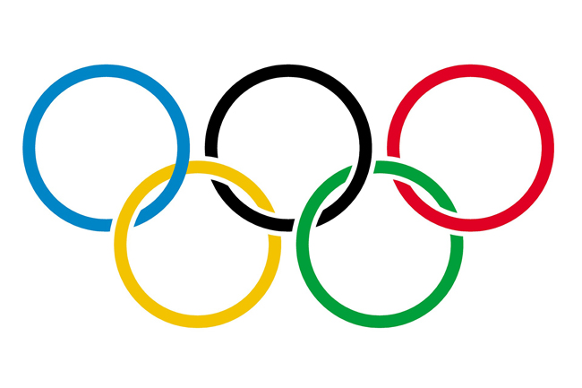
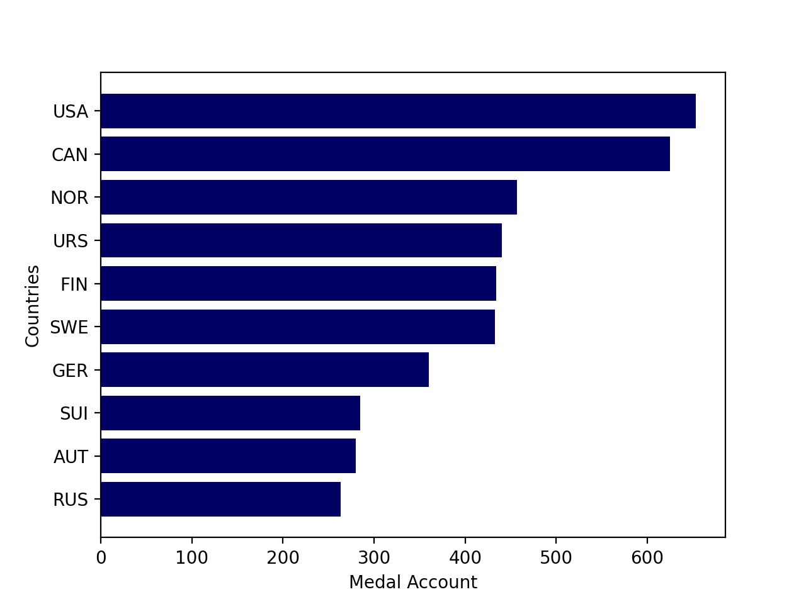

Winter Olympic Data Analysis
1898-2014

We have had a big event called "Olympics" in winter. We have a time of enthusiasm when we see various heroes in the world of fierce competition. Obviously there are results of win and lose in the competition, but we know how valuable their sweat and effort are, regardless of the color of the medal, they did their best and we respect all the players.
I analyzed the entire data of valuable medals in various fields. Data was provided the IOC Research and Reference Service and published by The Guardian's Datablog
Top 10 countries
Top 10 countries
Congraturation! This is the countries with the most medals
Division of countries by continent
Division of countries by continent

Top 10 countries were divided by continent.
America, Europe and Eurasia.
Top 3 countries/h1>
Top 3 countries
Top 3 countries with ratio of medal types
Top 3 countries with ratio of medal types
Period
Period Analyze
South Korea
South Korea Analyze
South Korea
South Korea : Individual vs Team
South Korea
South Korea : Gender
South Korea
South Korea : Medal types
South Korea
South Korea : Period
Nearest countires
Compare nearest countries
Nearest countires
Canada and USA
Nearest countires
Norway, Sweden, and Finland
Nearest countires
Germany, Denmark, Belgium and Poland
Nearest countires
Italy, Spai, and France
Nearest countires
Japan, Korea, and China